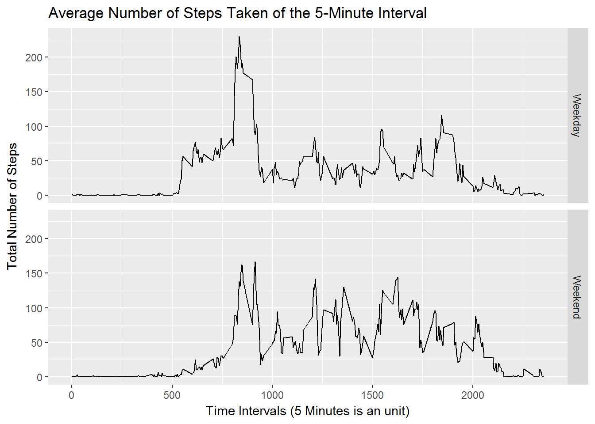

Loading and preprocessing the data
Show any code that is needed to
library(ggplot2)
inputdata <- read.csv('activity.csv')avail_dates <- levels(factor(inputdata$date))
steps <- data.frame("Date" = avail_dates, "SumSteps" = c(1:length(avail_dates)))What is mean total number of steps taken per day?
For this part of the assignment, you can ignore the missing values in the dataset.
for ( i in avail_dates){
steps$SumSteps[steps$Date == i] <- sum(inputdata[inputdata$date == i,1])
}hist1 <- qplot(na.omit(steps$SumSteps))
print(hist1)## `stat_bin()` using `bins = 30`. Pick better value with `binwidth`.fig.path = "images/"# Mean steps
meansteps <- mean(na.omit(steps$SumSteps))
# Median steps
medisteps <- median(na.omit(steps$SumSteps))
print(meansteps)## [1] 10766.19print(medisteps)## [1] 10765What is the average daily activity pattern?
intervals <- aggregate(steps ~ interval, data = inputdata, FUN = mean)
PlotInterval <- ggplot(data = intervals, aes(x = interval, y = steps)) +
geom_line() +
xlab("Time Intervals (5 Minutes is an unit)") +
ylab("Total Number of Steps") +
ggtitle("Average Number of Steps Taken of the 5-Minute Interval")
print(PlotInterval)fig.path = "images/"max5min <- intervals$interval[intervals$steps == max(intervals$steps)]
print(max5min)## [1] 835Imputing missing values
Note that there are a number of days/intervals where there are missing values (coded as NA). The presence of missing days may introduce bias into some calculations or summaries of the data.
missing_val <- sapply(X = inputdata, FUN = function(x) sum(is.na(x)))
print(missing_val)## steps date interval
## 2304 0 0replaced_input <- inputdata
for ( i in c(1:dim(replaced_input)[1])){
if (is.na(replaced_input$steps[i])){
replaced_input$steps[i] <- intervals$steps[intervals$interval == replaced_input$interval[i]]
}
}replaced_input <- inputdata
for ( i in c(1:dim(replaced_input)[1])){
if (is.na(replaced_input$steps[i])){
replaced_input$steps[i] <- intervals$steps[intervals$interval == replaced_input$interval[i]]
}
}replaced_steps <- data.frame("Date" = avail_dates, "SumSteps" = c(1:length(avail_dates)))
for ( i in avail_dates){
replaced_steps$SumSteps[steps$Date == i] <- sum(replaced_input[replaced_input$date == i,1])
}
hist2 <- qplot(replaced_steps$SumSteps)
print(hist2)## `stat_bin()` using `bins = 30`. Pick better value with `binwidth`.fig.path = "images/"
mean_replace <- mean(replaced_steps$SumSteps)
med_replace <- median(replaced_steps$SumSteps)
print(mean_replace)## [1] 10766.19print(med_replace)## [1] 10766.19Are there differences in activity patterns between weekdays and weekends?
For this part the weekdays() function may be of some help here. Use the dataset with the filled-in missing values for this part.
replaced_input$Weekday <- weekdays(as.Date(replaced_input$date))
replaced_input$Weekend <- as.factor(replaced_input$Weekday == "Saturday" | replaced_input$Weekday == "Sunday")
levels(replaced_input$Weekend) <- c("Weekday", "Weekend")
repl_weekday <- replaced_input[replaced_input$Weekend == "Weekday",]
repl_weekend <- replaced_input[replaced_input$Weekend == "Weekend",]
int_weekday <- aggregate(steps ~ interval + Weekend, data = repl_weekday, FUN = mean)
int_weekend <- aggregate(steps ~ interval + Weekend, data = repl_weekend, FUN = mean)
int_week <- rbind(int_weekday, int_weekend)PlotInterval2 <- ggplot(data = int_week, aes(x = interval, y = steps)) + facet_grid(Weekend ~ .) +
geom_line() +
xlab("Time Intervals (5 Minutes is an unit)") +
ylab("Total Number of Steps") +
ggtitle("Average Number of Steps Taken of the 5-Minute Interval")
print(PlotInterval2)
fig.path = "images/"